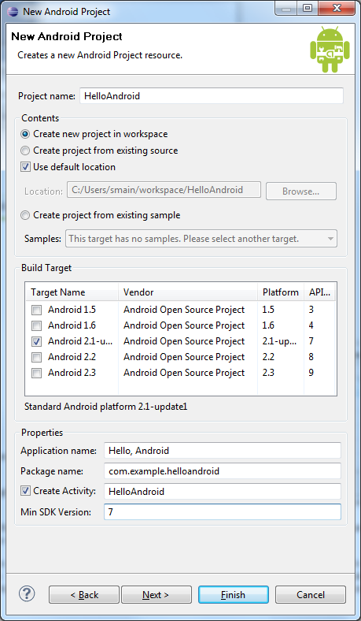

As a developer, you know that the first impression of a development framework is how easy it is to write "Hello, World." Well, on Android, it's pretty easy. It's particularly easy if you're using Eclipse as your IDE, because we've provided a great plugin that handles your project creation and management to greatly speed-up your development cycles.
This tutorial assumes that you're using Eclipse. If you're not, see Developing in Other IDEs. You can then return to this tutorial and ignore anything about Eclipse.
Before you start, you should already have the SDK installed, and if you're using Eclipse, you should have installed the ADT plugin as well. If you have not installed these, see Installing the Android SDK and return here when you've completed the installation.
To run the Hello World application, you need to install at least one Android platform in your SDK environment. If you have not already performed this step, you need to do it now.
To install a platform in Eclipse:
To learn more about how to use AVDs and the options available to you, refer to the Android Virtual Devices document.
In this tutorial, you will run your application in the Android Emulator. Before you can launch the emulator, you must create an Android Virtual Device (AVD). An AVD defines the system image and device settings used by the emulator.
To create an AVD:
The Create New AVD dialog appears.
You can ignore the rest of the fields for now.
After you've created an AVD, the next step is to start a new Android project in Eclipse.
If the ADT Plugin for Eclipse has been successfully installed, the resulting dialog should have a folder labeled "Android" which should contain "Android Project". (After you create one or more Android projects, an entry for "Android XML File" will also be available.)
Click Finish.
Here is a description of each field:
Your package name must be unique across all packages installed on the Android system; for this reason, it's important to use a standard domain-style package for your applications. The example above uses the "com.example" namespace, which is a namespace reserved for example documentation — when you develop your own applications, you should use a namespace that's appropriate to your organization or entity.
Activity class. An
Activity is simply a class that can run and do work. It can create a UI if it
chooses, but it doesn't need to. As the checkbox suggests, this is optional, but an
Activity is almost always used as the basis for an application.Other fields: The checkbox for "Use default location" allows you to change the location on disk where the project's files will be generated and stored. "Build Target" is the platform target that your application will be compiled against (this should be selected automatically, based on your Min SDK Version).
Notice that the "Build Target" you've selected uses the Android 1.1 platform. This means that your application will be compiled against the Android 1.1 platform library. If you recall, the AVD created above runs on the Android 1.5 platform. These don't have to match; Android applications are forward-compatible, so an application built against the 1.1 platform library will run normally on the 1.5 platform. The reverse is not true.
Your Android project is now ready. It should be visible in the Package
Explorer on the left.
Open the HelloAndroid.java file, located inside HelloAndroid > src >
com.example.helloandroid). It should look like this:
package com.example.helloandroid;
import android.app.Activity;
import android.os.Bundle;
public class HelloAndroid extends Activity {
/** Called when the activity is first created. */
@Override
public void onCreate(Bundle savedInstanceState) {
super.onCreate(savedInstanceState);
setContentView(R.layout.main);
}
}
Notice that the class is based on the Activity class. An Activity is a
single application entity that is used to perform actions. An application may have many separate
activities, but the user interacts with them one at a time. The
onCreate() method
will be called by the Android system when your Activity starts —
it is where you should perform all initialization and UI setup. An activity is not required to
have a user interface, but usually will.
Now let's modify some code!
Take a look at the revised code below and then make the same changes to your HelloAndroid class. The bold items are lines that have been added.
package com.example.helloandroid;
import android.app.Activity;
import android.os.Bundle;
import android.widget.TextView;
public class HelloAndroid extends Activity {
/** Called when the activity is first created. */
@Override
public void onCreate(Bundle savedInstanceState) {
super.onCreate(savedInstanceState);
TextView tv = new TextView(this);
tv.setText("Hello, Android");
setContentView(tv);
}
}
Tip: An easy way to add import packages to your project is to press Ctrl-Shift-O (Cmd-Shift-O, on Mac). This is an Eclipse shortcut that identifies missing packages based on your code and adds them for you.
An Android user interface is composed of hierarchies of objects called
Views. A View is a drawable object used as an element in your UI layout,
such as a button, image, or (in this case) a text label. Each of these objects is a subclass
of the View class and the subclass that handles text is TextView.
In this change, you create a TextView with the class constructor, which accepts
an Android Context instance as its parameter. A
Context is a handle to the system; it provides services like
resolving resources, obtaining access to databases and preferences, and so
on. The Activity class inherits from Context, and because your
HelloAndroid class is a subclass of Activity, it is also a Context. So, you can
pass this as your Context reference to the TextView.
Next, you define the text content with
setText().
Finally, you pass the TextView to
setContentView() in order to
display it as the content for the Activity UI. If your Activity doesn't
call this method, then no UI is present and the system will display a blank
screen.
There it is — "Hello, World" in Android! The next step, of course, is to see it running.
The Eclipse plugin makes it easy to run your applications:
To learn more about creating and editing run configurations in Eclipse, refer to Developing In Eclipse, with ADT.
The Eclipse plugin automatically creates a new run configuration for your project and then launches the Android Emulator. Depending on your environment, the Android emulator might take several minutes to boot fully, so please be patient. When the emulator is booted, the Eclipse plugin installs your application and launches the default Activity. You should now see something like this:

The "Hello, Android" you see in the grey bar is actually the application title. The Eclipse plugin
creates this automatically (the string is defined in the res/values/strings.xml file and referenced
by your AndroidManifest.xml file). The text below the title is the actual text that you have
created in the TextView object.
That concludes the basic "Hello World" tutorial, but you should continue reading for some more valuable information about developing Android applications.
The "Hello, World" example you just completed uses what is called a "programmatic" UI layout. This means that you constructed and built your application's UI directly in source code. If you've done much UI programming, you're probably familiar with how brittle that approach can sometimes be: small changes in layout can result in big source-code headaches. It's also easy to forget to properly connect Views together, which can result in errors in your layout and wasted time debugging your code.
That's why Android provides an alternate UI construction model: XML-based layout files. The easiest way to explain this concept is to show an example. Here's an XML layout file that is identical in behavior to the programmatically-constructed example:
<?xml version="1.0" encoding="utf-8"?> <TextView xmlns:android="http://schemas.android.com/apk/res/android" android:id="@+id/textview" android:layout_width="fill_parent" android:layout_height="fill_parent" android:text="@string/hello"/>
The general structure of an Android XML layout file is simple: it's a tree
of XML elements, wherein each node is the name of a View class
(this example, however, is just one View element). You can use the
name of any class that extends View as an element in your XML layouts,
including custom View classes you define in your own code. This
structure makes it easy to quickly build up UIs, using a more simple
structure and syntax than you would use in a programmatic layout. This model is inspired
by the web development model, wherein you can separate the presentation of your
application (its UI) from the application logic used to fetch and fill in data.
In the above XML example, there's just one View element: the TextView,
which has five XML attributes. Here's a summary of what they mean:
| Attribute | Meaning |
|---|---|
xmlns:android
|
This is an XML namespace declaration that tells the Android tools that you are going to refer to common attributes defined in the Android namespace. The outermost tag in every Android layout file must have this attribute. |
android:id
|
This attribute assigns a unique identifier to the TextView element.
You can use the assigned ID to reference this View from your source code or from other
XML resource declarations.
|
android:layout_width
|
This attribute defines how much of the available width on the screen this View should consume.
In this case, it's the only View so you want it to take up the entire screen, which is what a value of "fill_parent" means. |
android:layout_height
|
This is just like android:layout_width, except that it refers to available screen height. |
android:text
|
This sets the text that the TextView should display. In this example, you use a string resource instead of a hard-coded string value. The hello string is defined in the res/values/strings.xml file. This is the recommended practice for inserting strings to your application, because it makes the localization of your application to other languages graceful, without need to hard-code changes to the layout file. For more information, see Resources and Internationalization. |
These XML layout files belong in the res/layout/ directory of your project. The "res" is
short for "resources" and the directory contains all the non-code assets that
your application requires. In addition to layout files, resources also include assets
such as images, sounds, and localized strings.
When you want a different design for landscape, put your layout XML file inside /res/layout-land. Android will automatically look here when the layout changes. Without this special landscape layout defined, Android will stretch the default layout.
The Eclipse plugin automatically creates one of these layout files for you: main.xml. In the "Hello World" application you just completed, this file was ignored and you created a layout programmatically. This was meant to teach you more about the Android framework, but you should almost always define your layout in an XML file instead of in your code. The following procedures will instruct you how to change your existing application to use an XML layout.
/res/layout/ folder and open main.xml (once opened, you might need to click
the "main.xml" tab at the bottom of the window to see the XML source). Replace the contents with
the following XML:
<?xml version="1.0" encoding="utf-8"?> <TextView xmlns:android="http://schemas.android.com/apk/res/android" android:id="@+id/textview" android:layout_width="fill_parent" android:layout_height="fill_parent" android:text="@string/hello"/>
Save the file.
res/values/ folder, open strings.xml.
This is where you should save all default text strings for your user interface. If you're using Eclipse, then
ADT will have started you with two strings, hello and app_name.
Revise hello to something else. Perhaps "Hello, Android! I am a string resource!"
The entire file should now look like this:
<?xml version="1.0" encoding="utf-8"?>
<resources>
<string name="hello">Hello, Android! I am a string resource!</string>
<string name="app_name">Hello, Android</string>
</resources>
HelloAndroid class use the
XML layout. Edit the file to look like this:
package com.example.helloandroid;
import android.app.Activity;
import android.os.Bundle;
public class HelloAndroid extends Activity {
/** Called when the activity is first created. */
@Override
public void onCreate(Bundle savedInstanceState) {
super.onCreate(savedInstanceState);
setContentView(R.layout.main);
}
}
When you make this change, type it by hand to try the code-completion feature. As you begin typing "R.layout.main" the plugin will offer you suggestions. You'll find that it helps in a lot of situations.
Instead of passing setContentView() a View object, you give it a reference
to the layout resource.
The resource is identified as R.layout.main, which is actually a compiled object representation of
the layout defined in /res/layout/main.xml. The Eclipse plugin automatically creates this reference for
you inside the project's R.java class. If you're not using Eclipse, then the R.java class will be generated for you
when you run Ant to build the application. (More about the R class in a moment.)
Now re-run your application — because you've created a launch configuration, all you need to do is click the green arrow icon to run, or select Run > Run History > Android Activity. Other than the change to the TextView string, the application looks the same. After all, the point was to show that the two different layout approaches produce identical results.
Tip: Use the shortcut Ctrl-F11 (Cmd-Shift-F11, on Mac) to run your currently visible application.
Continue reading for an introduction to debugging and a little more information on using other IDEs. When you're ready to learn more, read Application Fundamentals for an introduction to all the elements that make Android applications work. Also refer to the Developer's Guide introduction page for an overview of the Dev Guide documentation.
In Eclipse, open the file named R.java (in the gen/ [Generated Java Files] folder).
It should look something like this:
package com.example.helloandroid;
public final class R {
public static final class attr {
}
public static final class drawable {
public static final int icon=0x7f020000;
}
public static final class id {
public static final int textview=0x7f050000;
}
public static final class layout {
public static final int main=0x7f030000;
}
public static final class string {
public static final int app_name=0x7f040001;
public static final int hello=0x7f040000;
}
}
A project's R.java file is an index into all the resources defined in the
file. You use this class in your source code as a sort of short-hand
way to refer to resources you've included in your project. This is
particularly powerful with the code-completion features of IDEs like Eclipse
because it lets you quickly and interactively locate the specific reference
you're looking for.
It's possible yours looks slighly different than this (perhaps the hexadecimal values are different).
For now, notice the inner class named "layout", and its
member field "main". The Eclipse plugin noticed the XML
layout file named main.xml and generated a class for it here. As you add other
resources to your project (such as strings in the res/values/string.xml file or drawables inside
the res/drawable/ direcory) you'll see R.java change to keep up.
When not using Eclipse, this class file will be generated for you at build time (with the Ant tool).
You should never edit this file by hand.
The Android Plugin for Eclipse also has excellent integration with the Eclipse debugger. To demonstrate this, introduce a bug into your code. Change your HelloAndroid source code to look like this:
package com.example.helloandroid;
import android.app.Activity;
import android.os.Bundle;
public class HelloAndroid extends Activity {
/** Called when the activity is first created. */
@Override
public void onCreate(Bundle savedInstanceState) {
super.onCreate(savedInstanceState);
Object o = null;
o.toString();
setContentView(R.layout.main);
}
}
This change simply introduces a NullPointerException into your code. If you run your application again, you'll eventually see this:

Press "Force Quit" to terminate the application and close the emulator window.
To find out more about the error, set a breakpoint in your source code
on the line Object o = null; (double-click on the marker bar next to the source code line). Then select Run > Debug History > Hello,
Android from the menu to enter debug mode. Your app will restart in the
emulator, but this time it will suspend when it reaches the breakpoint you
set. You can then step through the code in Eclipse's Debug Perspective,
just as you would for any other application.

If you don't use Eclipse (such as if you prefer another IDE, or simply use text editors and command line tools) then the Eclipse plugin can't help you. Don't worry though — you don't lose any functionality just because you don't use Eclipse.
The Android Plugin for Eclipse is really just a wrapper around a set of tools included with the Android SDK. (These tools, like the emulator, aapt, adb, ddms, and others are documented elsewhere.) Thus, it's possible to wrap those tools with another tool, such as an 'ant' build file.
The Android SDK includes a tool named "android" that can be
used to create all the source code and directory stubs for your project, as well
as an ant-compatible build.xml file. This allows you to build your project
from the command line, or integrate it with the IDE of your choice.
For example, to create a HelloAndroid project similar to the one created in Eclipse, use this command:
android create project \
--package com.example.helloandroid \
--activity HelloAndroid \
--target 2 \
--path <path-to-your-project>/HelloAndroid
This creates the required folders and files for the project at the location defined by the path.
For more information on how to use the SDK tools to create and build projects, please read Developing in Other IDEs.
{kind=link}
{kind=link}